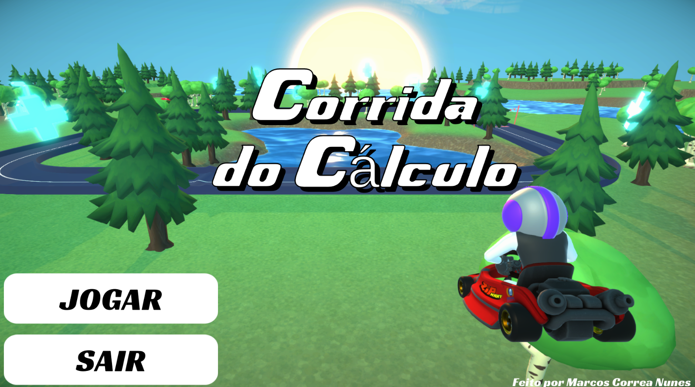
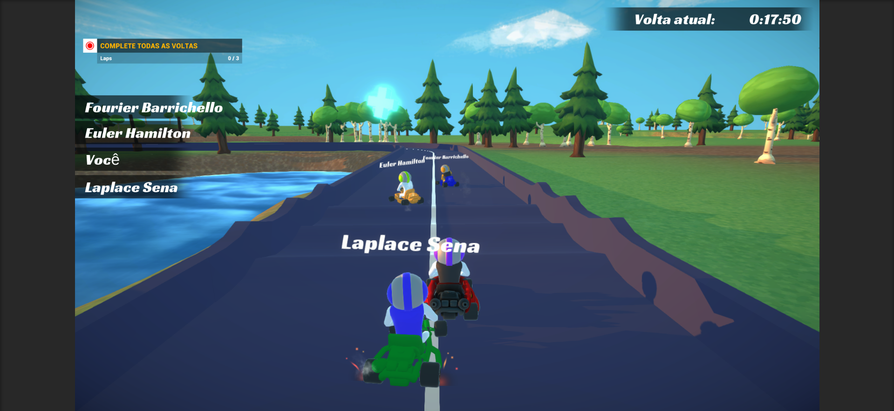
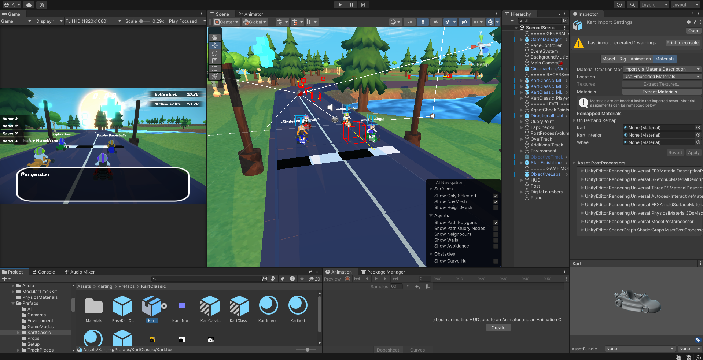

Jogo de Corrida de Kart
Um jogo de corrida de kart feito em Unity C#, com perguntas de matemática e lógica durante a pista. O intuito do jogo é ajudar crianças pequenas a aprenderem de forma mais divertida a matemática.
Baixar AgoraBem-vindos ao Mundo da Educação Divertida!
Explorem um mundo onde aprender matemática é tão divertido quanto uma corrida de kart.

Características do Jogo
Classificação Etária: Livre
Perfeito para crianças de todas as idades.
Unity Machine Learning Agents
Utilizamos agentes de aprendizado de máquina para criar desafios inteligentes e adaptativos.
Modelos 3D com Blender
Todos os modelos 3D foram criados com precisão no Blender, proporcionando uma experiência visual rica e envolvente.

Perguntas com Scriptable Objects
As perguntas de matemática e lógica são gerenciadas de forma eficiente usando Scriptable Objects.
Detalhes do Jogo

Desenvolvimento em Unity
O jogo foi desenvolvido usando a plataforma Unity, aproveitando suas capacidades robustas para criar uma experiência de jogo envolvente e educativa.